8.3 Infinite Impulse Response (IIR) Filter Design
Digital Signal Processing
Imron Rosyadi
8.6–8.8 Infinite Impulse Response (IIR) Filter Design and Realization
Learning Objectives
By the end of this session, you should be able to:
- Explain the impulse invariant design method and when it is appropriate.
- Derive a digital IIR transfer function from an analog transfer function using impulse invariance.
- Describe how pole–zero placement shapes the magnitude response of a digital filter.
- Design simple IIR filters by manually placing poles and zeros:
- Second‑order bandpass and bandstop (notch) filters.
- First‑order lowpass and highpass filters.
- Implement IIR filters using:
- Direct‑Form I, Direct‑Form II, and
- Cascade realization with second‑order sections.
Real‑World ECE Motivation
Where do IIR filters show up?
- Wireless communications
- IF bandpass filters, channel shaping
- Audio / speech
- Equalizers, telephone channel models
- Control systems
- Digital equivalents of analog compensators
- Sensors & instrumentation
- Lowpass filters for noise reduction
Why IIR instead of FIR?
- Often achieve sharp transitions with lower order
- Can mimic analog filters (Butterworth, Chebyshev, etc.)
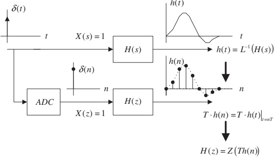
8.6 Impulse Invariant Design: Core Idea
We start with an analog filter:
- Analog transfer function: \(H(s)\)
- Analog impulse response: \(h(t) = \mathcal{L}^{-1}\{H(s)\}\)
Impulse invariant design:
- Compute analog impulse response \(h(t)\).
- Sample \(h(t)\) at \(t = nT\) to get \(h(nT)\).
- Multiply by \(T\) to approximate area: \(T\,h(n) = T\,h(t)\big|_{t=nT}\).
- Take \(z\)‑transform of \(T\,h(n)\) to obtain \(H(z)\).
Mathematically:
\[ h(t) = \mathcal{L}^{-1}\{H(s)\} \]
\[ T h(n) = T h(t)\big|_{t=nT},\quad n\ge 0 \]
\[ H(z) = \mathcal{Z}\{T h(n)\} \]
Note
Key idea: The digital impulse response is a sampled (and scaled) version of the analog impulse response. This makes the time‑domain behavior similar, especially for low frequencies.
Area and DC Gain Matching
The scaling factor \(T\) is chosen so that the area under \(h(t)\) matches the sum of \(T h(n)\):
\[ \int_0^{\infty} h(t)\,dt \;\approx\; T h(0) + T h(1) + T h(2) + \cdots \]
- Left side: DC gain of the analog filter.
- Right side: DC gain of the digital filter.
As \(T \to 0\) (sampling frequency \(f_s = 1/T \to \infty\)):
- Rectangular approximation becomes very accurate.
- DC gain of digital filter \(\approx\) DC gain of analog filter.
But for practical \(T\), we may need extra gain scaling to match an exact DC gain.
Example 8.15 – Analog to Digital (1/3)
Given analog transfer function:
\[ H(s) = \frac{2}{s + 2} \]
Sampling rate: \(f_s = 10\ \text{Hz} \Rightarrow T = 0.1\ \text{s}\)
Step 1: Inverse Laplace transform to get analog impulse response:
\[ h(t) = \mathcal{L}^{-1}\left\{\frac{2}{s + 2}\right\} = 2 e^{-2t} u(t) \]
Step 2: Sample and scale:
\[ T h(n) = T \cdot 2 e^{-2nT} u(n) = 0.2 e^{-0.2 n} u(n) \]
Step 3: Use \(z\)‑transform pair (Chapter 5):
\[ \mathcal{Z}\{e^{-a n} u(n)\} = \frac{z}{z - e^{-a}} \]
Here, \(a = 0.2\), so \(e^{-a} = e^{-0.2} \approx 0.8187\).
Example 8.15 – Analog to Digital (2/3)
Apply the \(z\)‑transform to \(T h(n)\):
\[ H(z) = \mathcal{Z}\{0.2 e^{-0.2n} u(n)\} = 0.2 \,\mathcal{Z}\{e^{-0.2n} u(n)\} = 0.2\,\frac{z}{z - 0.8187} \]
Express in standard IIR form:
\[ H(z) = \frac{0.2 z}{z - 0.8187} = \frac{0.2}{1 - 0.8187 z^{-1}} \]
This is a first‑order IIR lowpass‑like filter with:
- One pole at \(z = 0.8187\) (inside unit circle)
- One zero at \(z = 0\)
Tip
To quickly sketch the frequency response: - Pole close to \(z=1\) → large low‑frequency gain - Zero at \(z=0\) → attenuates high frequencies.
Example 8.15 – Frequency Response (3/3)
MATLAB (Program 8.12) computes:
- Analog frequency response \(H(j\omega)\) using
freqs. - Digital frequency response \(H(e^{j\Omega})\) using
freqz.
Main observations (Fig. 8.28):
The magnitude responses of analog and digital filters closely match in shape for \(f\) below about \(1.8\ \text{Hz}\).
There is a DC gain mismatch:
\[ H(e^{j\Omega})\big|_{\Omega=0} = H(1) = 1.1031 \]
To enforce unit DC gain, scale \(H(z)\):
\[ H(z) = \frac{1}{1.1031}\,\frac{0.2}{1 - 0.8187 z^{-1}} = \frac{0.1813}{1 - 0.8187 z^{-1}} \]
Middle plot of Fig. 8.28 shows the scaled magnitude response, now matching the analog much better in passband.
Aliasing in Impulse Invariant Design
Key issue: The analog impulse response \(h(t)\) is generally not band‑limited.
Sampling \(h(t)\) at rate \(f_s\):
- Any frequency content above Nyquist frequency \(f_s/2\) gets aliased back into \([0, f_s/2]\).
- This causes distortion in the digital filter’s frequency response.
Fig. 8.29 shows this numerically for Example 8.15:
- (A, B): Sampling at \(f_s = 8\ \text{Hz}\) (T=0.125 s) → strong aliasing, poor match.
- (C, D): Sampling at \(f_s = 16\ \text{Hz}\) → less aliasing, better magnitude match.
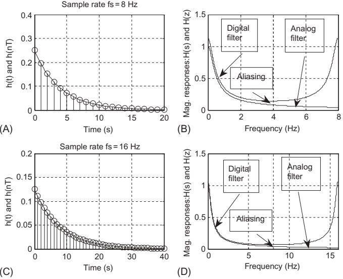
Warning
Aliasing cannot be eliminated in the impulse invariant method because we sample a non‑band‑limited impulse response. We can only reduce aliasing by: - Increasing sampling frequency \(f_s\), or - Designing the analog filter with a very low cutoff frequency.
When to Use Impulse Invariance
From the aliasing analysis:
- Analog highpass or bandstop filters have significant energy near the Nyquist limit even when oversampled.
- Sampling their impulse responses leads to maximum aliasing.
So:
- Do not use impulse invariance alone to design digital highpass or bandstop IIR filters (unless using extra anti‑aliasing or prewarping tricks).
- Prefer bilinear transform (BLT) for highpass or bandstop designs.
Impulse invariant design is appropriate for:
- Lowpass filters.
- Bandpass filters when sampling rate is much larger than the largest passband frequency.
Important
Rule of thumb: Use impulse invariant for low frequency, lowpass/bandpass designs with high oversampling. Use BLT for highpass / bandstop and more general cases.
Example 8.16 – Second‑Order Bandpass via Impulse Invariance (1/3)
Given analog transfer function:
\[ H(s) = \frac{s}{s^2 + 2s + 5} \]
Sampling rate: \(f_s = 10\ \text{Hz} \Rightarrow T = 0.1\ \text{s}\)
Step 1: Complete the square in denominator:
\[ H(s) = \frac{s}{(s+1)^2 + 2^2} \]
Rewrite numerator to match table form:
\[ H(s) = \frac{(s+1) - 1}{(s+1)^2 + 2^2} = \frac{s+1}{(s+1)^2 + 2^2} - 0.5\frac{2}{(s+1)^2 + 2^2} \]
Use Laplace transform table:
- \(\mathcal{L}^{-1}\big\{\frac{s+a}{(s+a)^2 + \omega_0^2}\big\} = e^{-a t}\cos(\omega_0 t) u(t)\)
- \(\mathcal{L}^{-1}\big\{\frac{\omega_0}{(s+a)^2 + \omega_0^2}\big\} = e^{-a t}\sin(\omega_0 t) u(t)\)
So analog impulse response is:
\[ h(t) = e^{-t}\cos(2t)\,u(t) - 0.5 e^{-t}\sin(2t)\,u(t) \]
Example 8.16 – Sampling and \(z\)‑Transform (2/3)
Sample and scale: \(T=0.1\)
\[ \begin{aligned} T h(n) &= T h(t)\big|_{t=nT} \\ &= 0.1 e^{-0.1n}\cos(0.2n) u(n) \\ &\quad - 0.05 e^{-0.1n}\sin(0.2n) u(n) \end{aligned} \]
Apply \(z\)‑transform (using formulas from Chapter 5):
\[ \begin{aligned} H(z) &= \mathcal{Z}\left\{0.1 e^{-0.1n}\cos(0.2n) u(n)\right\} \\ &\quad - \mathcal{Z}\left\{0.05 e^{-0.1n}\sin(0.2n) u(n)\right\} \\ &= \frac{0.1z(z - e^{-0.1}\cos(0.2))}{z^2 - 2 e^{-0.1}\cos(0.2) z + e^{-0.2}} \\ &\quad - \frac{0.05 e^{-0.1}\sin(0.2) z}{z^2 - 2 e^{-0.1}\cos(0.2) z + e^{-0.2}} \end{aligned} \]
After algebraic simplification, we obtain:
\[ H(z) = \frac{0.1 - 0.09767 z^{-1}}{1 - 1.7735 z^{-1} + 0.8187 z^{-2}} \]
Example 8.16 – Frequency Response (3/3)
Program 8.13 uses:
freqs([10],[1 2 5],w)(conceptually) for the analog \(H(s)\)freqz([0.1 -0.09766],[1 -1.7735 0.8187], length(w))for the digital \(H(z)\)
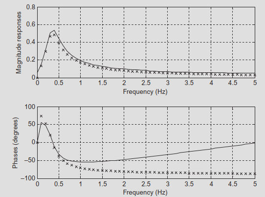
Observations:
- The shape of the digital filter’s magnitude response (bandpass) matches the analog filter’s shape.
- The passband gain is higher for the digital filter; again, gain scaling can be applied if unit gain is required.
Tip
When comparing analog and digital designs: - Match frequency axes in Hz: use \(\Omega = 2\pi f T\) for digital. - Focus on shape (location of peaks, nulls, bandwidth) first, then adjust gain.
8.7 Pole–Zero Placement: Intuition
In the \(z\)‑plane, consider placing poles and zeros and evaluating the response on the unit circle \(z = e^{j\Omega}\).
- Place a zero at angle \(\theta\) on the unit circle: \(z_0 = e^{j\theta}\).
- Numerator factor: \((z - e^{j\theta})(z - e^{-j\theta})\).
- At \(\Omega = \theta\), one factor is \((e^{j\theta} - e^{j\theta}) = 0\) → magnitude null.
- Place poles at \(z_p = r e^{\pm j\theta}\), with \(r < 1\):
- Denominator factor: \((z - re^{j\theta})(z - re^{-j\theta})\).
- At \(\Omega = \theta\), distance from \(e^{j\theta}\) to pole is \((1 - r)\) → small denominator → large magnitude.
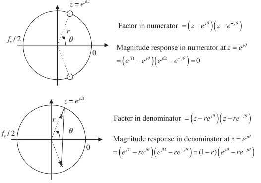
Note
Rule of thumb:
- Zeros suppress magnitude near their angle.
- Poles boost magnitude near their angle.
Application of Pole–Zero Placement
By combining pole and zero placements, we can create different filter types:
- Lowpass:
- Pole(s) near \(z=1\), zeros near \(z=-1\) or on unit circle at higher frequencies.
- Highpass:
- Zero at \(z=1\) (kill DC), pole closer to \(z=-1\) to emphasize high frequencies.
- Bandpass:
- Complex poles at angle \(\theta_0\) (center frequency); zeros at DC and Nyquist to attenuate outside band.
- Bandstop (notch):
- Zeros on the unit circle at \(\theta_0\) (notch frequency); poles near zeros (inside unit circle) to restore neighboring frequencies.
Pole–zero placement is:
- Intuitive and approximate.
- Very useful for simple filters with narrow bands or extreme cutoff frequencies.
8.7.1 Second‑Order Bandpass Filter – Geometry
Typical placement for a narrow bandpass (Fig. 8.32A):
- Complex poles: \(z = r e^{\pm j\theta}\)
- Radius \(r\) controls bandwidth.
- Angle \(\theta\) sets center frequency.
- Zeros: at \(z = 1\) and \(z = -1\)
- Zero gain at DC and folding frequency \(f_s/2\).
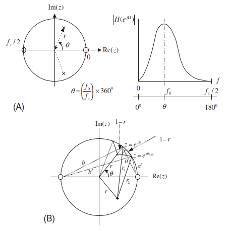
Center frequency angle:
\[ \theta = \left(\frac{f_0}{f_s}\right) \times 360^\circ \]
Bandwidth (approximate narrowband formula):
\[ r \approx 1 - \pi\frac{BW_{3\text{dB}}}{f_s},\quad 0.9 \le r < 1 \]
Second‑Order Bandpass Filter – Transfer Function
General transfer function:
\[ H(z) = \frac{K (z - 1)(z + 1)}{(z - r e^{j\theta})(z - r e^{-j\theta})} = \frac{K(z^2 - 1)}{z^2 - 2 r \cos\theta\, z + r^2} \]
Design formulas summary:
Center frequency:
\[ \theta = \left(\frac{f_0}{f_s}\right) 360^\circ \]
Pole radius:
\[ r \approx 1 - \pi \frac{BW_{3\text{dB}}}{f_s},\quad 0.9 \le r < 1 \]
Gain scaling for unit passband gain:
\[ K = \frac{(1 - r)\sqrt{1 - 2 r \cos(2\theta) + r^2}}{2|\sin\theta|} \]
Tip
Implementation form (for code):
\[ H(z) = \frac{b_0 + b_2 z^{-2}}{1 - a_1 z^{-1} + a_2 z^{-2}} \]
where \(b_0 = K\), \(b_1 = 0\), \(b_2 = -K\), \(a_1 = 2 r \cos\theta\), \(a_2 = -r^2\) (after factoring a \(z^2\) in numerator and denominator).
Example 8.17 – Second‑Order Bandpass Design
Specifications:
- Sampling rate: \(f_s = 8000\ \text{Hz}\)
- Center frequency: \(f_0 = 1000\ \text{Hz}\)
- 3‑dB bandwidth: \(BW = 200\ \text{Hz}\)
- Zero gain at 0 Hz and 4000 Hz (DC and Nyquist)
Step 1: Compute pole radius \(r\):
\[ r = 1 - \pi \frac{BW}{f_s} = 1 - \pi \frac{200}{8000} = 0.9215 \]
Step 2: Center frequency angle:
\[ \theta = \frac{f_0}{f_s} 360^\circ = \frac{1000}{8000} 360^\circ = 45^\circ \]
Step 3: Gain factor \(K\):
\[ K = \frac{(1 - 0.9215)\sqrt{1 - 2(0.9215)\cos(90^\circ) + 0.9215^2}}{2|\sin 45^\circ|} = 0.0755 \]
Final transfer function:
\[ H(z) = \frac{0.0755(z^2 - 1)}{z^2 - 2(0.9215)\cos 45^\circ z + 0.9215^2} = \frac{0.0755 - 0.0755 z^{-2}}{1 - 1.3031 z^{-1} + 0.8491 z^{-2}} \]
8.7.2 Second‑Order Bandstop (Notch) Filter – Geometry
For a notch (or bandstop) filter:
- Poles: same as bandpass, \(z = r e^{\pm j\theta}\).
- Zeros: placed on the unit circle at \(z = e^{\pm j\theta}\) (the notch frequency).
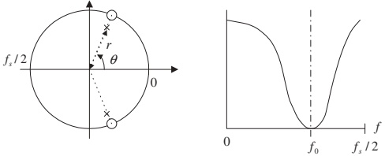
Design formulas:
Center (notch) frequency:
\[ \theta = \left(\frac{f_0}{f_s}\right) 360^\circ \]
Pole radius:
\[ r \approx 1 - \pi \frac{BW_{3\text{dB}}}{f_s},\quad 0.9 \le r < 1 \]
Transfer function:
\[ H(z) = \frac{K (z - e^{j\theta})(z - e^{-j\theta})}{(z - r e^{j\theta})(z - r e^{-j\theta})} = \frac{K(z^2 - 2 z\cos\theta + 1)}{z^2 - 2 r z\cos\theta + r^2} \]
Unit passband gain factor:
\[ K = \frac{1 - 2r\cos\theta + r^2}{2 - 2\cos\theta} \]
Example 8.18 – Notch Filter Design
Specifications:
- Sampling rate: \(f_s = 8000\ \text{Hz}\)
- Center (notch) frequency: \(f_0 = 1500\ \text{Hz}\)
- 3‑dB bandwidth: \(BW = 100\ \text{Hz}\)
Step 1: Pole radius:
\[ r \approx 1 - \pi\frac{100}{8000} = 0.9607 \]
Step 2: Angle \(\theta\):
\[ \theta = \frac{1500}{8000} 360^\circ = 67.5^\circ \]
Step 3: Gain factor \(K\):
\[ K = \frac{1 - 2(0.9607)\cos 67.5^\circ + 0.9607^2}{2 - 2\cos 67.5^\circ} = 0.9620 \]
Final transfer function:
\[ H(z) = \frac{0.9620(z^2 - 2 z\cos 67.5^\circ + 1)} {z^2 - 2(0.9607) z\cos 67.5^\circ + 0.9607^2} \]
\[ = \frac{0.9620 - 0.7363 z^{-1} + 0.9620 z^{-2}} {1 - 0.7353 z^{-1} + 0.9229 z^{-2}} \]
8.7.3 First‑Order Lowpass Filter – Case 1: \(f_c < f_s/4\)
Pole–zero placement (Fig. 8.34A):
- One real pole at \(z = \alpha\) on real axis.
- One zero at \(z = -1\) to force zero gain at Nyquist \(f_s/2\).

Approximate derivation:
DC magnitude:
\[ \left|H(e^{j0})\right| = \frac{\text{dist from }1 \text{ to } -1}{\text{dist from }1 \text{ to }\alpha} = \frac{2}{1 - \alpha} \]
At 3‑dB cutoff, approximate distance geometry leads to:
\[ 2\pi f_c T = 1 - \alpha \]
Therefore, pole location:
\[ \alpha = 1 - 2\pi \frac{f_c}{f_s} \]
Valid when \(f_c < f_s/4\) and \(\alpha \approx 0.9\,\text{to}\,1\).
Important
Design formulas – Lowpass (case 1):
If \(f_c < f_s/4\):
\[ \alpha \approx 1 - 2\pi\frac{f_c}{f_s},\quad 0.9 \le \alpha < 1 \]
Transfer function:
\[ H(z) = \frac{K (z + 1)}{z - \alpha},\quad K = \frac{1 - \alpha}{2} \]
First‑Order Lowpass – Case 2: \(f_c > f_s/4\)
When the cutoff frequency is above \(f_s/4\), we reposition the pole near \(z = -1\) (Fig. 8.35).
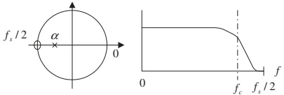
Approximate design formula:
For \(f_c > f_s/4\):
\[ \alpha \approx -\big(1 - \pi + 2\pi\frac{f_c}{f_s}\big),\quad -1 < \alpha \le -0.9 \]
Transfer function is still:
\[ H(z) = \frac{K(z + 1)}{z - \alpha},\quad K = \frac{1 - \alpha}{2} \]
Example 8.19 – First‑Order Lowpass
Specifications:
- Sampling rate: \(f_s = 8000\ \text{Hz}\)
- 3‑dB cutoff frequency: \(f_c = 100\ \text{Hz}\)
- Zero gain at 4000 Hz (Nyquist)
Since \(f_c = 100\ \text{Hz} \ll f_s/4 = 2000\ \text{Hz}\), use case 1 formula:
\[ \alpha \approx 1 - 2\pi\frac{100}{8000} = 0.9215 \]
Scale factor:
\[ K = \frac{1 - \alpha}{2} = \frac{1 - 0.9215}{2} = 0.03925 \]
Transfer function:
\[ H(z) = \frac{0.03925(z + 1)}{z - 0.9215} = \frac{0.03925 + 0.03925 z^{-1}}{1 - 0.9215 z^{-1}} \]
Alternative way to compute \(K\):
DC gain of unscaled filter:
\[ \text{DC gain} = \frac{z+1}{z-0.9215}\Bigg|_{z=1} = \frac{2}{1 - 0.9215} = 25.4777 \]
Set \(K = 1 / 25.4777 = 0.03925\).
8.7.4 First‑Order Highpass Filter
Very similar structure, but we swap the location of the zero:
- Zero at \(z = 1\) → kills DC.
- Pole at \(z = \alpha\) on real axis.
Two cases again:
- If \(f_c < f_s/4\), then \(\alpha \approx 1 - 2\pi\frac{f_c}{f_s}\), \(0.9 \le \alpha < 1\).
- If \(f_c > f_s/4\), then \(\alpha \approx -\left(1 - \pi + 2\pi \frac{f_c}{f_s}\right)\), \(-1 < \alpha \le -0.9\).
Transfer function:
\[ H(z) = \frac{K(z - 1)}{z - \alpha},\quad K = \frac{1 + \alpha}{2} \]
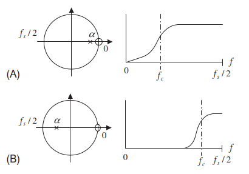
Note
Compare with lowpass:
- Lowpass: zero at \(z=-1\), numerator \((z+1)\).
- Highpass: zero at \(z=1\), numerator \((z-1)\).
Example 8.20 – First‑Order Highpass
Specifications:
- Sampling rate: \(f_s = 8000\ \text{Hz}\)
- 3‑dB cutoff frequency: \(f_c = 3800\ \text{Hz}\)
- Zero gain at 0 Hz (DC)
Since \(f_c = 3800\ \text{Hz} > f_s/4 = 2000\ \text{Hz}\), use highpass case 2 formula:
\[ \alpha \approx -\left(1 - \pi + 2\pi\frac{3800}{8000}\right) = -0.8429 \]
Scale factor (note: the text appears to have a minor sign typo):
The correct highpass formula is typically:
\[ K = \frac{1 + \alpha}{2} = \frac{1 - 0.8429}{2} = 0.07855\ (\text{approx}) \]
Transfer function:
\[ H(z) = \frac{0.07854(z - 1)}{z + 0.8429} = \frac{0.07854 - 0.07854 z^{-1}}{1 + 0.8429 z^{-1}} \]
Alternative: enforce unity gain at Nyquist (\(z = -1\)):
Passband gain:
\[ \frac{z - 1}{z + 0.8429}\Bigg|_{z=-1} = \frac{-1 - 1}{-1 + 0.8429} = 12.7307 \]
So \(K = 1 / 12.7307 = 0.07854\).
8.8 Realization Structures for IIR Filters
Once we have the transfer function \(H(z)\), we need to implement it in hardware or software.
Common realization forms:
- Direct‑Form I
- Direct‑Form II
- Cascade form using second‑order sections
Trade‑offs:
- Memory usage (# of delay elements)
- Numerical stability and sensitivity to coefficient quantization
- Ease of mapping into code or DSP instructions
Tip
In practice, engineers often: - Factor a high‑order design into biquad (2nd‑order) sections. - Implement each biquad in direct‑form II transposed (for good numerical properties).
Example 8.21 – Direct‑Form I Realization (1/2)
Given first‑order highpass Butterworth filter:
\[ H(z) = \frac{0.1936 - 0.1936 z^{-1}}{1 + 0.6128 z^{-1}} \]
Identify coefficients:
- Numerator: \(b_0 = 0.1936,\ b_1 = -0.1936\)
- Denominator: \(a_0 = 1,\ a_1 = 0.6128\)
Difference equation (from \(H(z)\)):
\[ y(n) = -0.6128 y(n-1) + 0.1936 x(n) - 0.1936 x(n-1) \]
Direct‑Form I structure (Fig. 8.37):
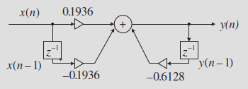
Example 8.21 – MATLAB Implementation (2/2)
Program 8.14 implements Direct‑Form I manually:
sample = 2:2:20; % Input test array
x = [0 0]; % Input buffer [x(n) x(n-1)]
y = [0 0]; % Output buffer [y(n) y(n-1)]
b = [0.1936 -0.1936]; % Numerator coefficients
a = [1 0.6128]; % Denominator coefficients
for n = 1:1:length(sample)
% Shift buffers
for k = 2:-1:2
x(k) = x(k-1);
y(k) = y(k-1);
end
x(1) = sample(n);
y(1) = 0; % Initialize output
% FIR (feedforward) part
for k = 1:1:2
y(1) = y(1) + x(k)*b(k);
end
% IIR (feedback) part
for k = 2:2
y(1) = y(1) - a(k)*y(k);
end
out(n) = y(1);
end
outExample 8.22 – Direct‑Form II Realization (1/2)
Given second‑order filter:
\[ H(z) = \frac{0.7157 + 1.4314 z^{-1} + 0.7157 z^{-2}} {1 + 1.3490 z^{-1} + 0.5140 z^{-2}} \]
Coefficients:
- \(b_0 = 0.7157,\ b_1 = 1.4314,\ b_2 = 0.7157\)
- \(a_0 = 1,\ a_1 = 1.3490,\ a_2 = 0.5140\)
Direct‑Form II uses an internal state \(w(n)\):
\[ \begin{aligned} w(n) &= x(n) - a_1 w(n-1) - a_2 w(n-2) \\ y(n) &= b_0 w(n) + b_1 w(n-1) + b_2 w(n-2) \end{aligned} \]
Fig. 8.38 shows the Direct‑Form II block diagram.
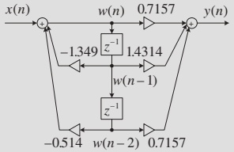
Tip
Direct‑Form II reuses the same delay line for feedforward and feedback, which halves the number of delay elements compared to Direct‑Form I.
Example 8.22 – MATLAB Implementation (2/2)
Program 8.15 manually implements Direct‑Form II:
sample = 2:2:20; % Input test array
x = [0]; % Input buffer [x(n)]
y = [0]; % Output buffer [y(n)]
w = [0 0 0]; % Internal states [w(n) w(n-1) w(n-2)]
b = [0.7157 1.4314 0.7157]; % Numerator coefficients
a = [1 1.3490 0.5140]; % Denominator coefficients
for n = 1:1:length(sample)
% Shift w(n) states
for k = 3:-1:2
w(k) = w(k-1);
end
x(1) = sample(n);
% IIR (feedback) stage: compute w(n)
w(1) = x(1);
for k = 2:1:3
w(1) = w(1) - a(k)*w(k);
end
% FIR (feedforward) stage: compute y(n)
y(1) = 0;
for k = 1:1:3
y(1) = y(1) + b(k)*w(k);
end
out(n) = y(1);
end
outAgain, this is equivalent to:
8.8.2 Cascade Form for Higher‑Order IIR Filters (1/2)
High‑order IIR filters are typically factored into second‑order sections:
\[ H(z) = H_1(z)\, H_2(z)\,\cdots H_M(z) \]
Each \(H_k(z)\) is a second‑order (biquad) filter implemented via Direct‑Form I or II.
Example 8.23:
Given 4th‑order filter:
\[ H(z) = \frac{0.5108z^{2}+1.0215z+0.5108}{z^{2}+0.5654z+0.4776} \times \frac{0.3730z^{2}+0.7460z+0.3730}{z^{2}+0.4129z+0.0790} \]
Write each as standard second‑order section in \(z^{-1}\):
\[ H_1(z) = \frac{0.5108 + 1.0215 z^{-1} + 0.5108 z^{-2}} {1 + 0.5654 z^{-1} + 0.4776 z^{-2}} \]
\[ H_2(z) = \frac{0.3730 + 0.7460 z^{-1} + 0.3730 z^{-2}} {1 + 0.4129 z^{-1} + 0.0790 z^{-2}} \]
Example 8.23 – Cascade Realization (2/2)
Direct‑Form I cascade (Fig. 8.39):
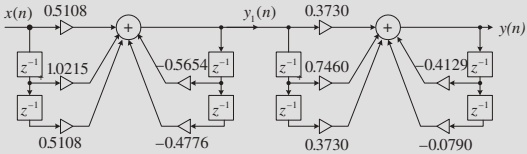
Difference equations – first section:
\[ \begin{aligned} y_1(n) &= -0.5654 y_1(n-1) - 0.4776 y_1(n-2) \\ &\quad + 0.5108 x(n) + 1.0215 x(n-1) + 0.5108 x(n-2) \end{aligned} \]
Second section:
\[ \begin{aligned} y(n) &= -0.4129 y(n-1) - 0.0790 y(n-2) \\ &\quad + 0.3730 y_1(n) + 0.7460 y_1(n-1) + 0.3730 y_1(n-2) \end{aligned} \]
Direct‑Form II cascade (Fig. 8.40) just replaces each second‑order block with its DF‑II implementation:
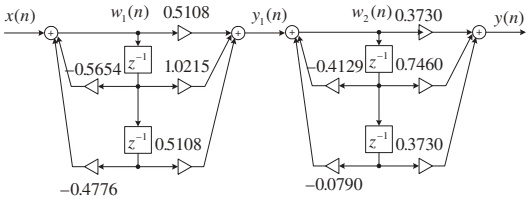
In both cases, output of section 1 (\(y_1(n)\) or \(w_1\) outputs) becomes input to section 2.
Summary / Key Points
- Impulse invariant design:
- Sample and scale the analog impulse response \(h(t)\) to obtain digital \(h[n]\).
- Works well for lowpass and bandpass with high sampling rates.
- Suffers from aliasing because \(h(t)\) is not band‑limited.
- Pole–zero placement:
- Geometric design of simple IIRs using intuition about how poles/zeros shape the response.
- Second‑order bandpass and bandstop (notch) filters: complex poles with radius \(r\) and angle \(\theta\).
- First‑order lowpass and highpass: real pole \(\alpha\) and a single zero at DC or Nyquist.
- Realization structures:
- Direct‑Form I: straightforward mapping from difference equation, more delay elements.
- Direct‑Form II: memory‑efficient using internal state \(w(n)\).
- Cascade of second‑order sections: standard for higher‑order IIRs (better numerical properties).
Important
Conceptually:
- Design domain: analog \(H(s)\) vs digital \(H(z)\) vs pole–zero geometry.
- Implementation domain: difference equations → Direct I, Direct II, cascade.
Formulas Summary
Impulse Invariant
Analog impulse response:
\[ h(t) = \mathcal{L}^{-1}\{H(s)\} \]
Sample and scale:
\[ T h(n) = T h(t)\big|_{t=nT},\quad n \ge 0 \]
Digital transfer function:
\[ H(z) = \mathcal{Z}\{T h(n)\} \]
DC gain approximation:
\[ \int_0^\infty h(t)\,dt \approx T \sum_{n=0}^\infty h(n) \]
Second‑Order Bandpass – Pole–Zero Placement
Center frequency angle:
\[ \theta = \left(\frac{f_0}{f_s}\right) 360^\circ \]
Pole radius (narrowband approximation):
\[ r \approx 1 - \pi\frac{BW_{3\text{dB}}}{f_s},\quad 0.9 \le r < 1 \]
Transfer function:
\[ H(z) = \frac{K(z^2 - 1)}{z^2 - 2 r z\cos\theta + r^2} \]
Gain factor:
\[ K = \frac{(1 - r)\sqrt{1 - 2 r\cos(2\theta) + r^2}}{2|\sin\theta|} \]
Second‑Order Bandstop (Notch) – Pole–Zero Placement
Angle:
\[ \theta = \left(\frac{f_0}{f_s}\right) 360^\circ \]
Pole radius:
\[ r \approx 1 - \pi\frac{BW_{3\text{dB}}}{f_s},\quad 0.9 \le r < 1 \]
Transfer function:
\[ H(z) = \frac{K(z^2 - 2 z\cos\theta + 1)}{z^2 - 2 r z\cos\theta + r^2} \]
Gain factor:
\[ K = \frac{1 - 2 r\cos\theta + r^2}{2 - 2\cos\theta} \]
First‑Order Lowpass – Pole–Zero Placement
Case 1: \(f_c < f_s/4\):
\[ \alpha \approx 1 - 2\pi\frac{f_c}{f_s},\quad 0.9 \le \alpha < 1 \]
Case 2: \(f_c > f_s/4\):
\[ \alpha \approx -(1 - \pi + 2\pi\frac{f_c}{f_s}),\quad -1 < \alpha \le -0.9 \]
Transfer function:
\[ H(z) = \frac{K(z + 1)}{z - \alpha},\quad K = \frac{1 - \alpha}{2} \]
First‑Order Highpass – Pole–Zero Placement
Case 1: \(f_c < f_s/4\):
\[ \alpha \approx 1 - 2\pi\frac{f_c}{f_s},\quad 0.9 \le \alpha < 1 \]
Case 2: \(f_c > f_s/4\):
\[ \alpha \approx -(1 - \pi + 2\pi\frac{f_c}{f_s}),\quad -1 < \alpha \le -0.9 \]
Transfer function:
\[ H(z) = \frac{K(z - 1)}{z - \alpha},\quad K = \frac{1 + \alpha}{2} \]
Realization Structures
Generic IIR:
\[ H(z) = \frac{\sum_{k=0}^{M} b_k z^{-k}}{1 + \sum_{k=1}^{N} a_k z^{-k}} \]
Direct‑Form I difference equation:
\[ y(n) = -\sum_{k=1}^{N} a_k y(n-k) + \sum_{k=0}^{M} b_k x(n-k) \]
Direct‑Form II intermediate state:
\[ \begin{aligned} w(n) &= x(n) - \sum_{k=1}^{N} a_k w(n-k) \\ y(n) &= \sum_{k=0}^{M} b_k w(n-k) \end{aligned} \]
Cascade form:
\[ H(z) = \prod_{i=1}^M H_i(z),\quad \text{each }H_i(z)\text{ second order} \]
8.6–8.8 IIR Filters – Interactive Deck
Getting Started
This interactive deck lets you:
- Experiment with impulse invariant design in Python.
- Explore how poles and zeros affect frequency responses.
- See how realization structures map from equations to code.
All the Python examples run in your browser via Pyodide (WebAssembly). You can edit the code and re‑run to immediately see the effect.
1. Impulse Invariant – First‑Order Example (H(s) = 2/(s+2))
Use this cell to:
- Change the analog pole (currently at \(s=-2\)).
- Change the sampling rate \(f_s\).
- See how the digital pole and \(H(z)\) coefficients change.
2. Impulse Invariant – Compare Analog vs Digital Magnitude (Interactive)
Use a reactive slider for sampling rate and see how the digital magnitude response changes relative to a fixed analog filter.
Analog prototype: - \(H(s) = \dfrac{2}{s+2}\)
We’ll:
- Fix the analog filter.
- Let you change
fsinteractively. - Plot analog and digital magnitudes over frequency in Hz.
3. Impulse Invariant – Second‑Order Example (H(s) = s/(s² + 2s + 5))
Now work with the second‑order bandpass‐like analog filter:
\[ H(s) = \frac{s}{s^2 + 2s + 5} \]
We’ll:
- Derive the digital coefficients symbolically (as in Example 8.16).
- Let you change the sampling rate fs.
- See how the digital pole locations move.
4. Pole–Zero Placement – Interactive Bandpass Design
Use the bandpass formulas from Section 8.7.1 interactively:
- Choose center frequency \(f_0\).
- Choose 3‑dB bandwidth \(BW\).
- Observe the resulting frequency response and approximate pole radius \(r\).
5. Pole–Zero Placement – Interactive Notch (Bandstop)
Here, we implement the notch filter from Section 8.7.2.
- Slide the notch frequency \(f_0\).
- Adjust the bandwidth to see a wider or narrower notch.
6. First‑Order Lowpass – Interactive Design (Pole at α)
Use the first‑order lowpass formulas from Section 8.7.3.
We’ll let you:
- Set cutoff frequency \(f_c\).
- Compute \(\alpha\) automatically (case \(f_c < f_s/4\)).
- Visualize the magnitude response.
7. First‑Order Highpass – Interactive Design (Pole at α)
Similarly for first‑order highpass (Section 8.7.4):
- Zero at \(z=1\) (kill DC).
- Pole at \(\alpha\) (real).
8. Direct‑Form I vs Direct‑Form II – Interactive Signal Flow
Here we simulate a second‑order section with user‑chosen coefficients and compare Direct‑Form I vs Direct‑Form II outputs for a test signal.
You can:
- Change the input signal type (step, impulse, sine).
- Set simple coefficients to see stability and shape.
9. Design Challenge – From Specs to Code
Use this space as a sandbox:
- Design a bandpass or notch filter with your own specs.
- Reuse formulas from the earlier reactive cells.
- Plot the frequency response and test it on a signal.
10. Reflection – What Did You Observe?
Use these questions to consolidate learning:
- How does changing sampling rate in the impulse invariant method affect:
- The location of the digital pole(s)?
- The closeness of analog and digital magnitude responses?
- In pole–zero placement:
- How do radius \(r\) and angle \(\theta\) shape the filter type and bandwidth?
- Why do we place zeros at DC or Nyquist for lowpass/highpass?
- In realization:
- How do Direct‑Form I and Direct‑Form II differ structurally?
- Why might we prefer a cascade of second‑order sections in practice?